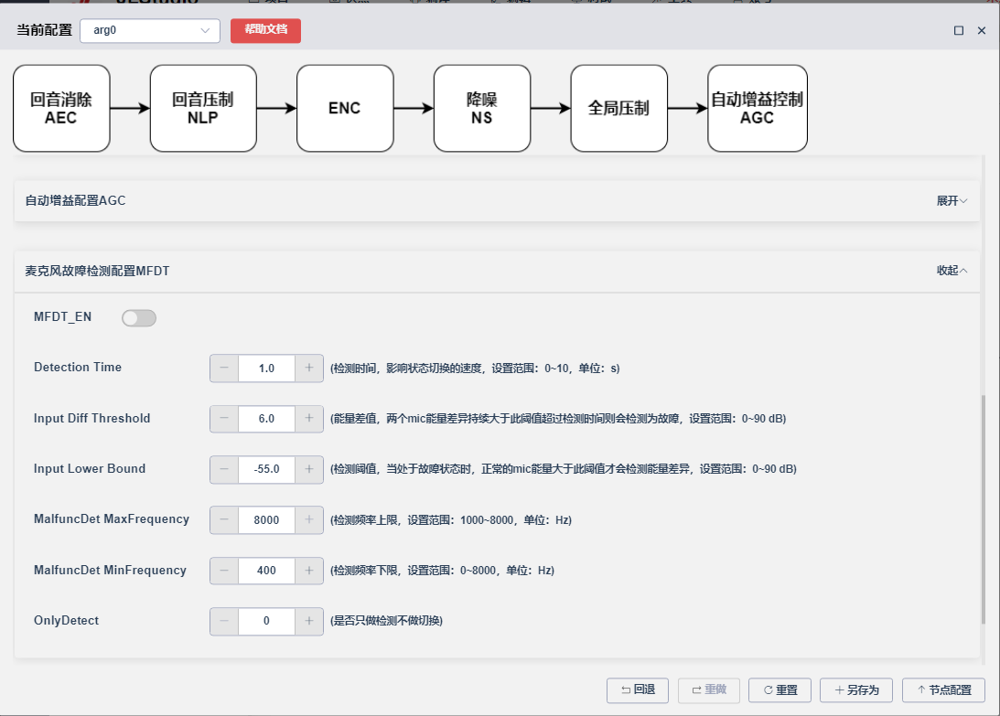
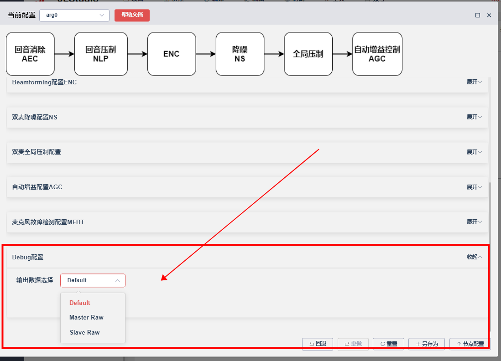
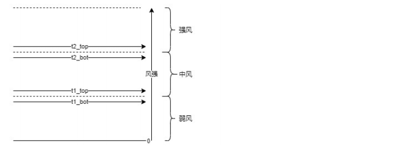
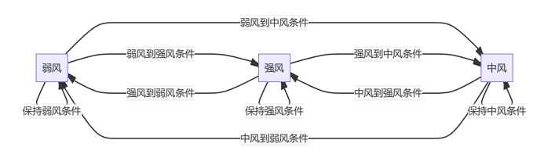

15.2. 清晰语音常用配置
15.2.1. 麦克风故障检测
使用双麦ENC的时候，当检测到其中一个麦克风被被堵塞导致双麦工作不正常的时候，程序主动切换成单麦模式，使用另外一个正常的麦克风，保证通话功能正常
15.2.1.1. 1、参数配置

MFDE_EN : 麦克风故障检测使能 Detection Time : 检测时间，影响单双麦切换的速度 Input Diff Threshold : 双麦能量差值，两个mic能量差异持续大于此阈值超过检测时间则会检测为故障 Input Lower Bound : 检测能量阈值，当处于故障状态时，正常的mic能量大于此阈值才会检测能量差异，避免安静环境下误判切回正常状态 MalfuncDet MaxFrequency ： 检测频率上限 MalfuncDet_MinFrequency ： 检测频率下限 OnlyDetect ： 是否只检测不切换
15.2.2. 麦克风切换
15.2.2.1. 话务耳机使用切换
双麦话务耳机通话可以调用一下接口切换单麦或者双麦使用
typedef enum {
DMS_FLEXIBLE_DUAL_MIC = 0, //双mic
DMS_FLEXIBLE_USE_TALK_MIC, //通话mic（主麦）
DMS_FLEXIBLE_USE_REF_MIC, //参考mic（副麦）
} DMS_FLEXIBLE_MIC;
/* 话务耳机切换使用的mic
* DMS_FLEXIBLE_DUAL_MIC ：正常双麦话务耳机
* DMS_FLEXIBLE_USE_TALK_MIC ：使用主麦
* DMS_FLEXIBLE_USE_REF_MIC ：使用副麦
*/
int aec_dms_flexible_selete_mic(DMS_FLEXIBLE_MIC mic);
15.2.2.2. 双麦调试使用切换

此配置用于调试使用，支持在线调试
配置说明：
Default : 输出算法处理后的结果
Master Raw : 不经过算法处理，输出主麦的裸麦数据
Slave Raw : 不经过算法处理，输出副麦的裸麦数据
15.2.3. 风噪检测
15.2.3.1. 双麦V100版本风噪检测
1、在audio_cvp.h里面配置使用双麦V100版本的风噪检测
/*
*DMS版本配置
*DMS_GLOBAL_V100:第一版双麦算法
*DMS_GLOBAL_V200:第二版双麦算法，更少的ram和mips
*/
#define TCFG_AUDIO_DMS_GLOBAL_VERSION DMS_GLOBAL_V100
2、在audio_cvp_dms.c里面通过CONST_DMS_WNC变量打开风噪检测使能
/*
*风噪自适应GainFloor使能控制
*0:关闭, 1:开启
*/
const u8 CONST_DMS_WNC = 1;
3、参数说明 wn_detect_time ： 风噪检测的时间窗大小 越大越准，能过滤掉短时风噪，建议值 0.32f wn_detct_time_ratio_thr ： 在时间窗内超过wn_detect_thr的帧数占比阈值 , 越大越难触发 建议值 0.8f wn_detect_thr ： 风噪检测阈值 越大越难触发 建议值 0.5f wn_minsuppress ： 检测到风噪时，替换GlobalMinSuppress为这个值
基本原理：
每一帧都会计算一个风噪的概率，当大于wn_detect_thr时，当前帧会被标记为风噪帧。当在wn_detect_time的时间内有wn_detct_time_ratio_thr比例的帧为风噪帧则认为风噪存在，使用wn_minsuppress替换GlobalMinSuppress的值
4、风噪状态值获取 可以通过int cvp_dms_get_wind_detect_state(void);获取风噪检测结果
/*获取风噪的检测结果，
1：有风噪，
0：无风噪*/
int cvp_dms_get_wind_detect_state(void);
15.2.3.2. 双麦V200版本风噪检测
1、在audio_cvp.h里面配置使用双麦V200版本的风噪检测
/*
*DMS版本配置
*DMS_GLOBAL_V100:第一版双麦算法
*DMS_GLOBAL_V200:第二版双麦算法，更少的ram和mips
*/
#define TCFG_AUDIO_DMS_GLOBAL_VERSION DMS_GLOBAL_V200
2、在audio_cvp_dms.c里面配置使用的风噪检测模式
/*
* 风噪降噪模式选择
* JLSP_WD_MODE1: 模式1为常规的降风噪模式，风噪残余会偏大些
* JLSP_WD_MODE2: 模式2为神经网络降风噪，风噪抑制会比较干净，但是会需要多消耗31kb的flash
*/
const u8 CONST_JLSP_WD_MODE = JLSP_WD_MODE1;
3、在audio_cvp_dms.c的audio_aec_open()函数里面,在调用aec_open()前面使能风噪检测
aec_param->EnableBit |= WNC_EN;
4、参数配置说明 （1）是否有风参数设置 wn_msc_th : 双麦非相关性阈值，根据双麦采集到的音频相关性取值，相关性越小取值越大，取值范围（0~1），默认取值0.6 ms_th ：麦增益能量阈值，用于衡量音频特定频段能量强度，需要根据实际风噪做确定；
ms_th参数确定方法如下：
如果需要在大于3m/s风速下做降风噪，需要用样机在3m/s的实际环境下测试，使用int jlsp_get_wind_detect_info(int *wd_flag, int *wd_val, int *wd_lev)接口实时获取当前的风噪强度wd_val，把这个风噪强度的值wd_val填给ms_th。
offset ：风噪能量增益偏移阈值，需要根据麦的增益确定
注意：有无风是由wn_msc_th和ms_th两个参数共同决定的。
（2）风噪等级参数设定，anc划分风强等级使用 t1_bot ：低风噪等级能量下限阈值，即风强由强风/中风减小到弱风能量阈值，需要根据具体样机麦的增益以及采样率来确定，一般可以通过具体样机spp打印确定，取值范围16bit t1_top ：低风噪等级能量上限阈值，即风噪由弱风增大到中风能量阈值，需要根据具体样机麦的增益以及采样率来确定，一般可以通过具体样机spp打印确定，取值范围16bit t2_bot ：强风噪等级能量下限阈值，即风强由强风减小到中风能量阈值，需要根据具体样机麦的增益以及采样率来确定，一般可以通过具体样机spp打印确定，取值范围16bit t2_top ：强风噪等级能量上限阈值，即风强由弱风/中风增大到强风能量阈值，需要根据具体样机麦的增益以及采样率来确定，一般可以通过具体样机spp打印确定，取值范围16bit t1_bot_cnt_limit ：风强变到弱风等级连续帧数计数，可根据对状态转移延时需求来确定，位宽16bit t1_top_cnt_limit ：风强由弱风变到中风等级连续帧数计数，可根据对状态转移延时需求来确定，位宽16bit t2_bot_cnt_limit ：风强由强风变到中风连续帧数计数，可根据对状态转移延时需求来确定，位宽16bit t2_top_cnt_limit ：风强变到强风连续帧数计数，可根据对状态转移延时需求来确定，位宽16bit

风强等级参数状态图)

弱风到中风条件：eng > t1_top 且 连续帧数大于t1_top_cnt_limit
弱风到强风条件：eng > t2_top 且 连续帧数大于t2_top_cnt_limit
中风到弱风条件：eng < t1_bot 且 连续帧数大于t1_bot_cnt_limit
中风到强风条件：eng > t2_top 且 连续帧数大于t2_top_cnt_limit
强风到中风条件：eng > t1_bot 且 eng < t2_bot 且 连续帧数大于t2_bot_cnt_limit
强风到弱风条件：eng < t1_bot 且 连续帧数大于t1_bot_cnt_limit
保持弱风条件：弱风到中风、强风条件都不满足
保持中风条件：中风到弱风、强风条件都不满足
保持强风条件：强风到中风、弱风条件都不满足